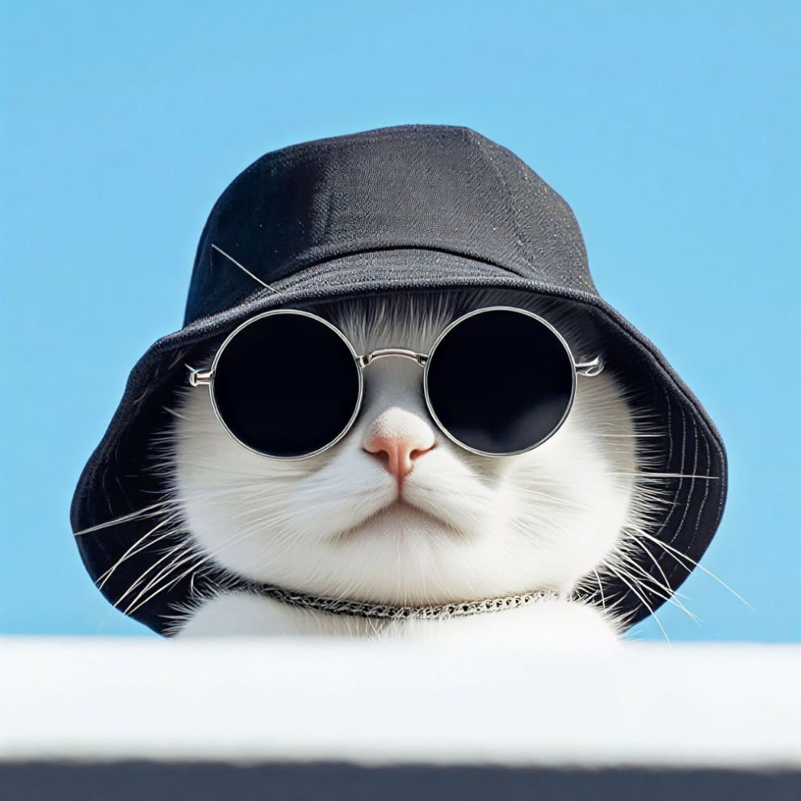

Halo! Selamat datang di
situs web eksperimental Fahri
Website fahrifaturrahman.is.a.dev ini dibuat dengan usaha coding dan untuk pribadi. Di sini kamu akan melihat personal hub, proyek kecil pribadi, developer, dan beberapa jejaring sosial yang terhubung.
All About Developer

Fahri Faturrahman
Fahri adalah seorang yang 70% introvert, developer web dan penikmat teknologi yang berfokus pada efisiensi, fungsionalitas, dan keteraturan sistem. Saya suka mengisi waktu luang atau kebosanan dengan membuat proyek-proyek kecil, saat membangun atau mengeksplorasi suatu produk digital, saya selalu mengutamakan performa yang ringan, tampilan yang bersih, serta pengalaman penggunaan yang intuitif tanpa kerumitan yang tidak perlu.
My Little Project
Image Upscaler
Proyek sederhana untuk meningkatkan ketajaman gambar dan resolusi gambar menjadi HD.
Url shortener
Proyek pribadi dan untuk semua. Memendekan URL panjang menjadi pendek.
Converter to QR Code
Mengonversi link, teks, atau gambar menjadi kode QR.
Jejaring Sosial